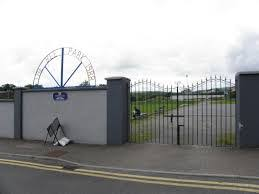

Our Club's history
Our Policy

The work of Manorhamilton Rangers FC is based on the following principles that will guide the development of sport for young people in this club. Children and young peoples experience of soccer should be guided by what is best for the child or young person. The stages of development and the ability of the child should guide the types of activity provided within the club. Adults will need to have a basic understanding of the needs of young people, including physical, emotional and personal.
Foundation
Manorhamilton Rangers Football Club was formed in 1980 by a group of dedicated locals wishing to bring soccer to the North Leitrim enclave of Manorhamilton. The club play at the Bee Park grounds in Manorhamilton and its primary colours are blue and black stripes, similar to Inter Milan and in recent years yellow and blue has come more to the fore. Manorhamilton Rangers or Manor Rangers, as the club is known locally, entered into Division 4 of the Sligo/Leitrim League. In its first season in existence the club won this division. Not content with this Manorhamilton Rangers FC won Division 3 in 1981 and Division 2 in 1982. This rapid rise to the top of Sligo/Leitrim Leagues continued in the 1988/89 season when Manorhamilton Rangers confirmed as Champions of the Premier Division. The Premier Division was again won in 2001/02 and 2006/07.